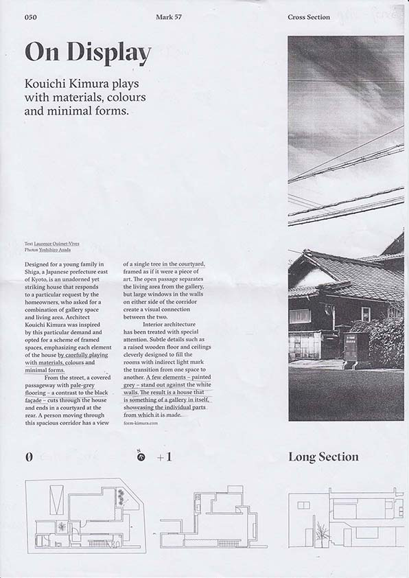

Retour
instagram
Niveaux de gris
Interprétation des gris d'une page de magazine. Le travail consistait à remplacer le texte de la page par des pattern ayant un lien avec l'article qui parle d'un architecte japonais, Kouichi Kimura.
Format: 297 x 420 mm
